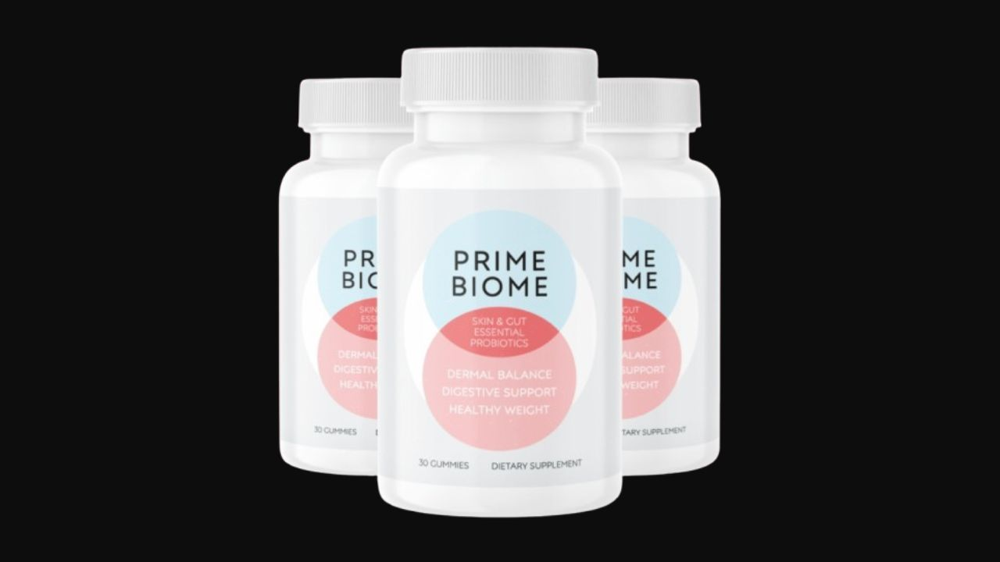

I analyzed the gut-skin axis formula and all key ingredients. Here's the honest truth about what this probiotic gummy does — and what 19,479 verified buyers are saying.
▶ Watch our full Prime Biome video review before buying
Prime Biome addresses skin aging from the inside out — targeting the gut-skin axis that topical creams cannot reach. The combination of B. Coagulans probiotics with Babchi, Lion's Mane, and Ceylon Ginger addresses both the microbiome imbalance and the skin cell renewal cycle simultaneously. Based on 19,479 reviews with strong satisfaction, it delivers on its gut-skin promise. The 60-day guarantee makes it a low-risk trial.
Prime Biome is a daily probiotic gummy — not a capsule — that combines 500 million CFUs of live bacteria with a blend of skin-supporting botanicals. It was designed around the gut-skin axis: the direct biological link between the gut microbiome and skin health that has emerged as one of the most significant discoveries in dermatological science.
The core insight: skin aging is not purely topical. Research shows gut dysbiosis — an imbalanced microbiome — directly triggers systemic inflammation and oxidative stress that accelerates collagen breakdown, slows cell turnover, and causes the fine lines, dark spots, and dullness that most people try to address with creams. Prime Biome targets the internal root cause.

A heat-stable probiotic strain that survives the stomach environment and colonizes the gut. Supports microbiome diversity, reduces bloating, and re-establishes the gut-skin communication pathway that drives skin cell renewal.
An Ayurvedic botanical with powerful skin regeneration properties. Promotes cell renewal and strengthens the skin barrier — functioning as an internal retinol alternative without the irritation. Addresses inflammatory skin conditions including hyperpigmentation.
Rich in antioxidants that support liver detoxification — critical because an overburdened liver manifests directly on the skin as dullness, dark spots, and uneven tone. Dandelion supports the detox pathway that keeps skin clear and radiant.
Prebiotic fiber that feeds the beneficial bacteria in the gut, helping them thrive and multiply. Reduces the bloating and gas that signals microbiome imbalance. Prebiotic support is what makes the probiotic effects sustainable.
Premium-grade anti-inflammatory that improves blood flow to the skin surface, brightens complexion, and supports healthy gut motility. Ceylon ginger is significantly more bioavailable than standard ginger.
An adaptogenic mushroom that reduces intestinal inflammation and simultaneously supports the growth of beneficial gut bacteria. The gut-brain-skin axis is supported through Lion's Mane's dual action on gut microbiome and neurological health.
"My skin has this natural glow, the bloating is gone, and I'm saving a fortune on skincare products. My mornings are effortless — I just wash my face and I'm good to go. No moisturizer, no concealer needed."
"This is the first time I've truly felt satisfied with both my skin and my weight. Some friends are convinced I've had work done. My sister started following this method too and calls me daily to thank me."
"Before trying this, I never would have believed my skin could look this smooth and radiant. Now when I look in the mirror, the dark spots and fine lines are simply gone."
60-Day Guarantee · GMP Certified · 19,479 Verified Reviews
→ Visit Official Prime Biome WebsiteGMP Certified · 19,479 Reviews · 60-Day Money-Back Guarantee
→ Get Prime Biome at the Official PriceAffiliate Disclosure: This review contains affiliate links. We may earn a commission at no additional cost to you. See our Affiliate Disclosure. Not evaluated by the FDA. Not intended to diagnose, treat, cure, or prevent any disease. Consult your healthcare provider before starting any supplement.